收录于合集

简 介
【 作者 】杨原（中国社会科学院世界经济与政治研究所）
【 来源 】杨原：《两极体系下大国战略竞争的演化》 ， 《国际政治科学》2019年第4期，第1—54页。
【 编辑 】李佳霖
内容提要
国际关系学界对两极体系的理解压倒性地来源于美苏冷战这一个案例，现有理论对更广阔历史时空中两极战略互动的多样性无法做出有效解释。随着中国崛起和中美两极化趋势的突显，两极体系理论需求的迫切性和现有知识的贫乏性之间的矛盾日益突出。本文综合运用演化博弈和案例研究方法，探究了两极体系下两个超级大国战略竞争的演化规律。博弈模型显示，两极体系下的大国战略竞争存在内生性的自我“刹车”机制，当竞争成本与竞争目标价值的比值足够高时，这种“刹车”机制就会发挥作用，促使竞争双方尊重彼此的利益边界，降低双方的对抗程度；反之，战略竞争则会持续或升级。案例研究发现，多种具体因素会影响战略竞争的成本——价值比不断发生变化，从而导致真实世界中的两极竞争过程千差万别，但这些演化过程都遵循本文模型所揭示的演化机制。当今时代战略竞争的成本—价值比比历史上任何时候都要大，这决定了中美竞争将“注定缓和”而不会“注定一战”。
关键词： 两极体系；中美关系；战略竞争；演化博弈；古代国际关系
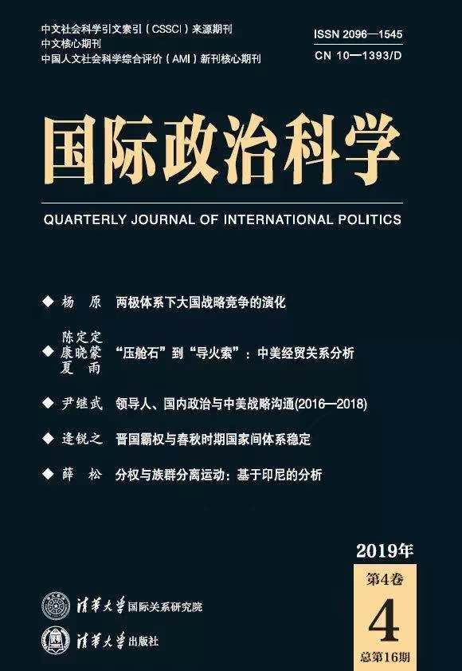
。
正 文
一、问题的提出 ****
**
**
本文研究的问题是：两极体系下两个超级大国的战略竞争会沿何种路径演化？是会持续对抗，还是对抗不断升级，还是逐渐缓和？是否存在决定两极战略竞争走向的内在规律？
（一）经验困惑
国际关系学界对两极体系的现有理解，压倒性地来源于美苏冷战这一个案例。[1]以结构现实主义为代表的现有理论认为，美苏冷战产生的根本原因就是国际实力分布的两极结构。[2]肯尼斯·华尔兹（KennethN. Waltz）在《国际政治理论》中译本序言中说：“冷战植根于两极体系，只有在该系统崩溃的时候冷战才能结束。”[3]换言之，苏联解体致使两极结构终结才导致了冷战的结束；[4]只要两极结构存续，超级大国之间的对抗和危机就会持续发生。[5]但事实上，在早于苏联解体的1990年11月，美国总统布什就已经正式宣布：“冷战结束了。”[6]更有观点认为，早在戈尔巴乔夫决定大规模裁军和不介入东欧变革的时候，冷战就已经结束了。[7]按照这种观点，两极结构就不是冷战的充分条件，冷战可以在两极结构依然存在的情况下结束。不管我们如何界定冷战结束的时间节点，美国和苏联的战略竞争最终演化为一种更富合作性的关系却是历史事实。[8]两极结构没变，为什么两个极的关系变了？
读者可能会说，之所以有这个困惑是因为我们是以结构现实主义为参照，或者是因为美苏冷战比较特殊。可是如果跳出结构现实主义的窠臼和美苏冷战这个孤例，我们对两极体系认识的迷茫感只会更加强烈。对于实力分布与和平稳定之间的关系，均势理论和霸权理论的观点截然相反；[9]在均势理论内部，对于两极结构是否真的有助于维持和平，同样众说纷纭。[10]回顾历史上的其他两极体系，有时两极之间大战频仍且规模不断升级（如罗马与迦太基），有时又能（在没有核武器的情况下）保持一个多世纪的“长和平”（如宋与辽），有时两极关系能够从激烈争斗进化为相对和平（如晋与楚），有时又能从保持现状退化为无限战争（如雅典与斯巴达）。[11]体系结构都一样，体系进程和结果却千差万别。显然，没有哪个现成的理论能够对这些两极体系同时做出解释。但我们仍然想知道，究竟是什么因素和机制，决定着两极体系下两个极的战略互动走向。
（二）现实关切
在理论界尚未对两极体系的过程得出真正清晰认识的情况下，随着苏联的解体和美苏两极的结束，学界对这个重要议题的研究迅速归于沉寂。然而，欠下的“功课”终究需要补上。随着中国崛起势头的持续，一个由中美两国定义的新两极体系正扑面而来。[12]中美两国关系会因这次结构变化而向何种方向发展，将是整个21世纪上半叶国际政治的最核心关切。然而令人不安的是，面对如此重大的历史性课题，我们所能借助的理论工具居然仍来自遥远的20世纪，我们最常参考的历史经验居然只是美苏冷战这一个孤例。
受美苏两极历史的影响，越来越多的学者开始用“战略竞争”来锚定当前的中美关系，[13]中美战略竞争不可避免正在成为战略界的主流看法。[14]“战略竞争”一词在国际关系理论文献中有着特定的内涵，包括三个构成要素：一是有两组成员相对稳定的对手，二是彼此感知到对方的敌意和威胁，三是对彼此未来的冲突性互动有共同的预期。[15]尽管“战略竞争”的精确定义学界还有争论，[16]但它区别于国家间一般性战略互动的一个根本特征是，处于战略竞争中的国家愿意牺牲自己一定程度的繁荣发展以剥夺其对手的可能收益。[17]从这个意义上讲，2018年美国从相对收益出发对中国发动贸易战以抑制中国发展，或可看作中美两国进入战略竞争的一个标志。
那么，中美战略竞争的前景是怎样的？是会不断升级从而重蹈美苏冷战的覆辙甚而陷入“修昔底德陷阱”？还是有机会走出恶性竞争，实现缓和与合作？要想对这些预测性问题做出可靠的回答，亟需发展和更新两极体系理论。
（三）两点说明
1. 为什么研究问题限定在“两极结构”下？
除了上面提到的现实相关性外，设定这个前提还因为从理论上讲两极体系下大国战略竞争缓和的难度大于多极体系。根据现有研究，当同时面临多个战略竞争对手时，国家会根据对手的威胁大小和相对实力差距做出策略性调整，向次要竞争者做出让步以集中资源应对威胁最紧迫的竞争者。[18]在导致大国战略竞争终止的原因中，除了自身战败或实力衰落外，最主要的因素就是新竞争对手或威胁的出现。[19]而根据两极体系的定义，[20]对于定义两极的那两个超级大国来说，除了对方以外没有其他国家能够对自己构成实质性威胁，这样就不存在这两个国家因为要对付更大的威胁或新威胁而缓和彼此之间关系的情况。排除第三方干扰后，两个超级大国的互动更有可能锁定在彼此冲突、持续对抗的恶性轨道上，而如果在这种不利情况下都存在令两国竞争走向缓和的机制，那么更一般意义上的两极关系就更不存在“注定一战（或冷战）”的宿命了。
2. 什么是“大国”？
大国的战略竞争是本文的核心研究对象，因此有必要对“大国”（great power）做出明确的界定。一种常见的对“大国”的理解是将其划分为能够构成体系一极的“超级大国”和“次等大国”（second-ranking greatpowers）两类。[21]还有一种做法是对“大国”作狭义的理解，将其仅指代那些能成为体系一极的国家。[22]本文采用第二种定义，“大国”仅指那些能够成为体系一极的超级大国。本文将不加区分地混用“大国”、“超级大国”、“极”三个术语指代同一类国家。除了“大国”以外的其他国家，尽管其规模和实力存在差异，在本文中均统称为“小国”。
（四）研究方法和理论发现
本文综合运用形式模型和实证研究两种方法。形式模型方面，本文借鉴演化主义路径广泛使用的不对称鹰鸽博弈，建立了两极体系下大国战略竞争的演化模型，计算得出不同情况下的演化稳定策略，并用复制者动态模型对演化过程进行动态模拟。实证研究方面，由于可供研究的两极体系数量有限，难以做大样本统计和定性比较分析，又由于各案例历史背景差异很大，无法做严格意义上的受控案例间比较，因此本文选择序贯访谈法（sequential interview）。这种方法既可用于真实的访谈，也可用于案例研究，其核心思路是直接从任意案例入手，寻找该案例所反映的因果关系，然后选择另一个与之前的案例有相似因素的案例，看是否有新的事实被发现，直到考察的内容和结果开始出现重复，由此即可得到关于所研究问题的相对完整的认识。[23]
本文的模型分析显示，只要竞争的成本与竞争目标的价值两者的比值足够高，无论目标占有方在竞争中获胜的概率有多大，（如果是占有者就选择强硬对抗，如果是争夺者就选择退让）这种相机策略都能成为博弈的演化稳定策略；占有方获胜的概率越高，这种策略成为演化稳定策略的门槛就越低。这意味着，大国战略竞争存在内生性的自我“刹车”机制，当成本—价值比足够高时，这种“刹车”机制就会发挥作用，促使竞争双方尊重彼此现有的权力范围，降低大国间的军事对抗程度。案例研究先后考察了五个两极案例，空间横跨东西方，时间覆盖上古、中古和现代。结果显示，多种具体因素会影响战略竞争的成本—价值比不断发生变化，从而导致真实的两极世界中大国战略竞争的过程千差万别，但不同的演化过程都遵循上述模型所揭示的演化机制。
本文共分为五个部分：除本部分外，第二部分简要回顾与两极战略竞争有关的现有知识；第三部分建立大国战略竞争的演化博弈模型，分析大国战略竞争缓和的条件；第四部分运用序贯访谈法考察两极体系案例，检验真实世界中两极战略竞争过程是否遵循本文博弈模型所揭示的演化规律；最后是结论。
二、现有知识的不足
为更好地厘清我们在“两极体系下大国战略竞争的演变规律”这个问题上已知和未知的边界，本部分将简要地批判性回顾学界对相关问题的现有认识。
（一）两极战略竞争
对于中国的崛起以及由此引发的中美战略竞争来说，权力转移理论似乎是分析这一问题的天然框架。[24]但需注意到，权力转移范式其实是将复杂曲折的大国战略竞争高度简化为一场大决战以及双方为准备这场大战所做的准备。在权力转移模型中，那场可能发生的体系战争（霸权战争）将一次性地、并且是决定性地确定霸权的归属。[25]但问题是，真实世界中很多时候并不存在这种大决战，有时崛起国和霸权国能够长时间共存，有时两国会频繁发生有限战争但谁也无法取得决定性优势。在崛起国和霸权国长期相持共存的情况下两国互动的过程和趋势如何，权力转移理论所能告诉我们的十分有限。
与权力转移学派不同，均势理论对两极体系的研究以承认两个实力接近的大国可以长期共存为前提。两极体系研究的核心议题是两极结构是否比其他类型的国际结构更稳定，相关探讨构成了我们已有的关于两极体系的知识的主干。尽管如此，目前我们对两极结构对两个极的战略关系究竟意味着什么仍然不甚明了。
首先，“两极稳定论”的自变量和因变量分别究竟指涉什么，学界的认识一度存在混乱。“极”有时指体系中的一级大国，有时又是指联盟集团。[26]不少学者对“两极”（bipolarity，两个超级大国）和“两集团化”（bipolarization，两个联盟集团）的区别缺乏清醒自觉的意识，经常混杂使用。[27]“稳定”同样有多种理解，有时指不发生战争或世界大战，[28]有时指体系的无政府性以及决定体系结构的“极”的数量不发生改变，[29]有时又是指体系成员都保持独立而不被其他成员吞并。[30]其次，即使按照狭义的、与本文议题相一致的定义，两极结构本身究竟能否决定两极的安全状态，学界依然分歧严重。既有坚持两极有助于维持和平的，[31]也有对此提出质疑的，[32]也有认为两极结构没有特殊性，不是和平的必要或充分条件的。[33]总之，仅从体系的两极结构状态出发，不足以帮助我们理解该结构下两极的战略竞争过程。
（二）战略竞争的驱动机制：观念还是物质？
建构主义认为，决定国际政治结果和国家行为的根本因素是居于主导地位的观念结构。由于观念是由施动者在互动实践中建构而成的，因此它并不是一成不变的。当主导性的观念结构发生变化时，国家行为也将因之发生相应的改变。正是基于这种理论认识，建构主义关注并声称能够解释国家互动的过程和体系的变化。在建构主义看来，国家身份、联盟、军事技术甚至特定武器都具有社会建构的属性，因此具体层面的冲突同样受到观念因素的支配；[34]作为战略竞争最主要诱发因素的领土争端，同样可能源于社会建构。[35]主流建构主义对体系变化的认识存在鲜明的目的论和进步主义的历史观，[36]基于这种认识，国家间的战略竞争似乎可以通过长期的互动逐渐消除敌对和竞争观念，实现缓和。
但问题是，观念是否真的是所有战略竞争的决定性因素？事实上，已有学者从社会建构和社会心理学的角度对战略竞争的产生原理做了专门性研究，结果发现，社会化中的社会证据启发（social proof heuristic）和认知失调减少（dissonancereduction）是促使国际竞争产生和延续的重要机制。但同时，该理论也指出，对于国际体系中位于实力排序顶端的大国，它们所面临的社会化压力比其他类型的国家都要低，大国与大国间竞争的主要驱动机制还是物质层面的理性计算。[37]
退一步讲，即使假定超级大国之间的战略竞争同样主要受观念因素的驱动，建构主义的乐观预期仍然不能让人放心。首先，建构主义对体系变迁的理论解释本身存在缺陷，[38]其进步性理论预期与许多经验事实相悖。例如，中国春秋时期近乎于洛克式的大国互动模式并没有进化出康德文化，反而退化为战国时期残酷恐怖的霍布斯文化。[39]事实上，正如建构主义学者本身所承认的，建构主义实际上只是指出国际政治的变化是可能的，但并不认为变化是容易的。相反，由于社会建构具有不断复制并对社会实践进行训练（discipline）和监督（police）的力量，因此一旦某种观念成为主导性的社会结构，国际政治的变化将变得非常困难。[40]
其次，观念同样可能导致冲突，社会互动同样可能建构并固化敌对文化。根据理查德·勒博（Richard Ned Lebow）的国际政治文化理论，导致国家间冲突和战争的第一动因正是荣誉和地位这种非物质性动机。[41]根据塞缪尔·巴尔金（SamuelBarkin）的现实建构主义理论，在现实生存理念下，社会互动和观念建构机制将建构政治冲突，并将国家行为导向现实主义逻辑。[42]根据本·莫尔（BenD. Mor）的研究，如果早期冲突事件与国家安全观念的某些组成部分相结合，国家将产生一种长期的威胁感，导致竞争迅速陷入僵局，由此又会导致观念与现实的自我强化，从而使信念、行为和结果陷入稳固的恶性循环。[43]总之，从观念和社会建构的角度，我们并不能对大国战略竞争的过程和趋势做出可靠的判断。
（三）战略竞争过程：不断升级还是逐渐缓和？
出于对宏观理论忽视国家互动过程特别是负面互动过程的不满，从20世纪八九十年代开始，一批学者转而专门研究国家间的战略竞争（rivalry）。这一领域的一个核心议题就是，战略竞争的过程是怎样的？究竟是会随时间的持续而不断固化竞争关系、不断升级冲突水平，还是会逐渐缓和或者增加竞争结束的可能性？
绝大部分学者持前一种论点。加里·戈茨（Gary Goertz）和保罗·迪赫（Paul F. Diehl）指出，国家间一旦形成持久性竞争，平均持续时间将超过40年。[44]在持久性竞争中，冲突和对抗水平既不随时间递增，也不随时间下降，而是保持大致水平的走势，而且这种走势基本不受国家主观干预的影响。两位学者将这种模式称为间断性均衡模型（punctuated equilibriummodel）。[45]布兰登•瓦勒里安诺（BrandonValeriano）认为，引发战略竞争的根本原因是相关国家采用所谓“权力政治战略”（powerpolitics strategies）应对竞争对手的威胁和解决彼此之间的纠纷。一旦使用了这些战略，这些国家就将被“锁定”在竞争关系中，除非这些国家停止使用这些权力政治战略，否则竞争将不可避免，也无法消除。[46]
更悲观的观点认为，战略竞争一旦形成，其冲突程度将随时间的推移而升高并最终导致战争爆发。这种演化模式被称为“火山模型”（volcano model）。[47]保罗·亨塞尔（PaulR. Hensel）认为，战略竞争的冲突水平会随时间逐渐增加；两个对手的冲突历史越长，他们的竞争关系往往越容易被“锁定”，未来的冲突也将愈加难以避免。[48]迈克尔·麦金尼斯（MichaelMcGinnis）和约翰·威廉姆斯（John Williams）认为，在竞争中，信仰体系和官僚政策会随时间推移而变得愈发强硬，从而使竞争行为愈发难以消除。[49]大卫·德雷尔（DavidR. Dreyer）指出，当战略竞争涉及多个议题时，争议议题的累加会不断强化竞争双方对彼此的“敌人”认知，同时也会增加竞争所牵涉的总体利益，从而使竞争愈加难以停止和弱化。[50]
当然，也有少数学者认为，战略竞争的冲突水平并不一定会随时间推移而固化或升级。克劳迪奥·乔菲-雷维拉（ClaudioCioffi- Revilla）的实证分析显示，战略竞争的结束概率是一个关于时间的J型函数，亦即战略竞争结束的可能性随时间递增。[51]斯科特·本内特（D.Scott Bennett）也发现，战略竞争存在“正向持续时间依赖”（positive durationdependence），战略竞争持续时间越长，其结束的可能性越大。[52]但本内特自己也对这一发现感到困惑，认为这个规律有待做出理论上的解释。[53]
尽管学者们对于战略竞争进程趋势的认识存在分歧，但在如何改变既有竞争状态这一问题上存在共识。学者们普遍认为，要改变或停止战略竞争，需依赖外部环境的重大改变。戈茨和迪赫认为，持久性竞争非常稳定，要想打破这种冲突反复出现的稳定模式，必需引入某种巨大的外部冲击，例如世界大战、领土变更、国际实力分布变化、内战、民族独立等。[54]詹姆斯·莱西（JamesLacey）也倾向从结构层面理解战略竞争的演变过程，他认为大国战略竞争源于某种重大的系统性冲击，除非体系内出现新的更危险的威胁，或者原来竞争的某一方被彻底消灭，战略竞争关系将被锁定并且会不断加强。[55]约阿希姆·伦茨蒂赫（JoachimK. Rennstich）认为，大国战略竞争的强度取决于战略竞争所处时代的经济特征，当经济发展主要依靠外部网络联系、贸易和制造的国际相互依赖程度高时，战略竞争的成本大，因而战略竞争的频率和烈度低；反之，竞争频率和烈度高。[56]
应当承认，外部环境的确会为国家的战略竞争设定具体的客观约束条件，重大外部事件也的确会对国家间的互动进程产生冲击。但同时也应注意到，在外部环境保持稳定不变的情况下，国家间战略竞争的走势仍然会出现显著波动甚至转折。这提示我们，可能还存在影响竞争过程的内生性机制。此外，在无政府体系中，塑造和冲击体系环境的最大力量来源是定义国际结构的那些“极”，如果说体系内其他国家之间的关系很大程度上取决于“极”与“极”之间是和平（合作）还是战争（冲突），那么对于“极”与“极”关系本身来说，又是什么力量决定了它们的变化和走势？现有研究基本上忽略了这个问题，而这正是本文核心探讨的问题。
三、大国战略竞争的演化模型
**
**
（一）理论准备 1 ：战略竞争的直接目标是权力的物质载体
建立大国战略竞争模型需要确定大国竞争的支付函数，为此必须明确大国战略竞争的目标，即大国为了什么而竞争。传统观点认为，大国战略竞争的主要动机和核心原因是土地。[57]事实上，包括大国战略竞争在内的绝大多数国际冲突及战争，都受土地空间因素驱动或与其直接相关。[58]不过，也有学者指出，除了土地以及以土地为载体的物质利益，大国同样追求地位这种不能完全还原为物质的象征性因素,[59]地位是战略竞争的重要动机。[60]迈克尔·克拉雷希（MichaelP. Colaresi）等学者因此将战略竞争划分为空间竞争（spatialrivalries）和位置竞争（positionalrivalries）两类，前者的主要竞争目标是领土和土地，后者的主要竞争目标是地位。[61]
尽管领土并非大国竞争的全部，地位同样是甚至有时还是更重要的竞争目标，但是地位、荣誉这些象征性利益归根结底需要通过权力的空间范围（土地）来体现。这是由权力的基本内涵决定的。权力是关系型概念，[62]是让他人做其原本不愿做的事情的能力。[63]权力所赋予的支配地位，只有在控制与被控制、影响与被影响的关系中才能得以体现。假如世界上只有一个人，那么这个人也就无所谓是否拥有权力，无所谓地位高低。而人总是依附于一定的空间（土地）之上，因此国际政治中一国地位高低的一个直接体现就是其所能影响和控制的空间范围的大小。正因如此，即使是位置竞争，引发冲突的直接原因也往往是对土地的争夺。[64]事实上，土地除了资源和战略位置等物质性价值外，其本身也具有重要的象征性价值。[65]位置竞争只有按照地域范围（比如全球性、地区性、地区—全球性等）进行分类才能准确地加以分析和理解。[66]
简言之，战略竞争包括了空间竞争和位置竞争，而位置竞争同样离不开对空间的争夺。因此大国的战略竞争往往同时混合有地位和空间两种动机。[67]需要特别指出的是，不同历史时期，位置竞争所争夺的具体空间形式在不断发生变化，但不变的是对空间的争夺本身。古代大国争夺更多的是领土本身。近代大国则将拥有更多的殖民地作为赢得和证明自身权力地位的重要途径。[68]二战后，美苏冷战的争夺焦点是双方在全球的势力范围。冷战后，无论是北约东扩还是“重返亚太”，无不是美国维护自身霸权地位动机在地缘空间上的反映。即使是目前看起来似乎最不在乎地缘政治利益的特朗普政府，也从未有一刻放松过对南海、台湾等地区的军事关切。[69]总之，土地作为权力的最基本物质载体，是战略竞争的基础性目标。
此外，对空间的争夺决定了战略竞争强度的上限。统计研究表明，凡是没有引发战争的战略竞争都不涉及领土争端。[70]换言之，领土争端是战略竞争引发战争的必要条件。不仅如此，领土问题更容易导致冲突升级，[71]更容易引发军备竞赛[72]和对抗性军事同盟生成；[73]涉及领土争端的战略竞争比仅涉及其他争端的战略竞争持续时间更长且更难解决。[74]将竞争目标限定于土地争夺，是理论研究须首先聚焦于最敏感、现实影响最严重问题的应有之义。
（二）理论准备 2 ：战略竞争是有成本的
任何战略竞争都是在互动中进行的，换言之，竞争双方都清楚自己的行动将不可避免地影响对方的收益，并且知道对方会根据自己的行动而做出相应的反应。[75]这意味着，任何针对竞争对手的进攻性策略都会不可避免地招致对手的反制，这种反制将会在不同程度上给进攻者施加成本。进攻性现实主义主张国家应尽可能对外扩张以确保自身生存，[76]但实际上，对外扩张会招致其他国家的反抗和制衡，由此带来的成本有时会远远超过扩张的收益。事实上，以进攻性战略谋求体系霸权是历史上少数几种能够将有潜力竞标霸权的大国推向亡国边缘的途径之一。[77]一项关于国家地缘政治竞争的计算机模拟研究也表明，贪婪的武力进攻和征服策略通常不会得到预期的回报。[78]
即使不发生军事冲突和战争，长期保持竞争和对抗状态同样需要支付高昂成本，比如必须持续高度关注对手的情报、规划和其他政策制定；维持更大规模的常备军、购买或者制造军备。此外，持续的战略竞争还须承担显著的机会成本，比如失去与竞争对手及其盟友的贸易和其他合作机会。[79]除了军事和经济成本，政治成本甚至会对战略竞争起到更为关键的“刹车”作用。国际竞争过程中存在所谓的双层博弈（two- level game），竞争国国内政治会对国际竞争产生重要影响。[80]显然，战略竞争的物质成本越高，国内观众对未来战略竞争的支持度就会越低，继续战略竞争的政治成本就越高。[81]实证研究也显示，战略竞争中暴力的使用程度与冲突后和平的持续时间呈正比。[82]即使战略竞争升级为无限战争，双方不计一切成本只为消灭对手，[83]这种情况仍然要受到双方可用总资源有限这个根本物质条件的约束。[84]
总之，战略竞争过程中采取进攻性、对抗性策略固然会帮助竞争者在某些情况下占据主动，但也将不可避免地承担相应的风险和代价。相反，选择防御性甚至退让性策略固然有可能将竞争优势拱手让与对手，但却也能因此而规避相应的成本，从而使自己更有可能在竞争中坚持得更久。正如下面的演化模型将要展示的，高对抗性战略竞争有高昂成本，这是导致大国战略竞争不会持续升级、不会一直维持高强度对抗的根本原因。
（三）演化博弈模型
演化主义路径对战略竞争的理解主要基于两方面认识。一是真实世界中的决策者都是有限理性的，[85]受认知能力、情感、信息、组织程序等因素影响，行为体的决策并不完全依据精确的理性计算。[86]二是决策者在多轮互动中会主动或被动地试错，通过系统筛选“遗传”下适应性高的策略，淘汰适应性低的策略。主动试错主要指决策者的学习。通过学习，竞争双方可以逐渐克服信息不对称问题，不断校正自己的策略选择。[87]被动试错则包括了国内政治压力和国家自身兴衰两种机制。错误的、成本高昂的策略选择会引发巨大的国内反对力量，甚至导致国家本身的覆灭，从而逆向筛选出相对正确的策略选择。基于这两点认识及前面的两点理论准备，本节借鉴演化主义路径所广泛使用的不对称鹰鸽博弈模型，[88]就两极体系下的大国战略竞争建立如下模型。
假定A国和B国是两极体系的两个极，两国为争夺土地控制权展开战略竞争。在每次竞争中，A国要么先于B国行动，已经控制了所争夺的土地，此时A国是该土地的拥有者；要么被B国抢先，此时A国是该土地的入侵者。进一步假定，在每次竞争中A国作为拥有者和入侵者的概率相等，B国同样如此，且两国都知道彼此的角色。[89]两国理论上都有4种可选策略，分别是无论自己是拥有者还是入侵者，都选择对抗到底（HH）；自己如果是拥有者则选择对抗到底，如果是入侵者则选择退让（HD）；自己如果是拥有者则选择退让，如果是入侵者则选择对抗到底（DH）；无论自己是拥有者还是入侵者，都选择退让（DD）。当双方都选择退让时，双方各有一半的几率获得该土地。当一方选择对抗到底而另一方选择退让时，前者获得该土地。当双方都选择对抗到底时，会爆发战争，胜者获得该土地，但双方都须承受战争的成本。[90]设拥有者获胜的概率为θ（0＜θ＜1），该土地对A国的价值为V（V＞0），A国的战争成本为C（C＞0）。[91]A国在竞争中的支付矩阵如表1所示。
根据表1，可以计算出不同情况下该博弈的演化稳定策略（evolutionary stable strategy, ESS）。演化稳定策略的基本含义是，该策略具有比其他策略更高的适应性，因此它可以阻止其他变异策略的入侵，使得行为体稳定地保持选择该策略。[92]设F(i,j)表示遇到策略j时策略i的支付值，根据定义，如果对于所有的策略j（j=1, 2, …, n，j≠i），都有F(i,i)＞F(j, i)，那么策略i就是该博弈的ESS。根据这一标准及表1的支付值，可以计算出不同情况下大国战略竞争博弈的ESS（参见表2）。
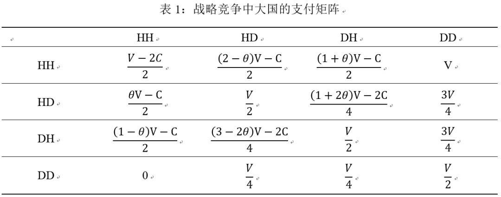
如表2所示，无论拥有者获胜的概率θ值是多少，只要值足够大（＞1－θ），HD都能成为博弈的ESS（见表2加粗部分）。这意味着，只要战争（相对于所争夺土地的价值）的成本足够高，在多次长期的互动中，大国将通过不断主动或被动试错，摒弃一味强硬的HH策略，转而选择（如果是拥有者则选择强硬，如果是入侵者则选择退让）这种相机策略。当双方都选择HD策略时，客观结果是双方都尊重对方已有的权力范围，双方关系将从战争和激烈对抗转为和平与稳定。不仅如此，θ值越大，亦即土地拥有者在战争中获胜的概率越高，HD成为ESS的门槛1－θ就越低。相反，如果值足够小（当0＜θ≤ 时＜θ或者当＜θ＜1时＜1－θ），亦即当战争成本相对足够低时，两国将始终选择强硬进攻策略，并且不存在其他更有吸引力的替代策略。[93]
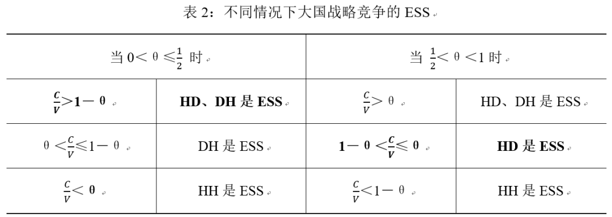
战略竞争从持续对抗和战争转变为彼此尊重权力范围的演化过程可用复制者动态模型加以刻画。复制者动态模型的核心思想是，如果某种策略的适应值大于所有策略的平均适应值，下一轮该策略被继续使用的概率就会增加，反之则减少。[94]设某轮（）大国四种策略HH、HD、DH和DD的概率分布为，下一轮（）大国选择HH策略的概率，其中，为轮HH策略的预期效用，为该轮博弈的平均预期效用。其他策略同理。因为，所以给定初始状态下HH、HD和DH三种策略的概率（x、y、z），即可计算出其后每一轮四种策略的概率，亦即得到四种策略使用频率的演化过程。
考虑到实力相当情况下拥有者获胜概率较高，[95]因此这里只考虑＜θ＜1情况下大国战略竞争的演化轨迹。[96]分别令θ=0.75，C=1，V=2和θ=0.75，C=1，V=1以分别考察1－θ＜≤θ和＞θ这两种具体情况。随机拟定20组（x、y、z）值分别作为这两种情况下HH、HD和DH三种策略的初始概率。由于我们关心的是大国战略竞争能否在无外力干预情况下自发地从战争频发走向和平稳定，因此我们令随机生成的初始x值≥0.5。用Sigmaplot14.0进行仿真模拟，结果分别如图1和图2所示。由图可见，即使初始状态下大国使用战争和强硬对抗策略（HH）的概率x较高，但经过一段时期的演化，策略分布概率均收敛于均衡点（0、1、0），即双方最终都趋向于选择HD策略。[97]
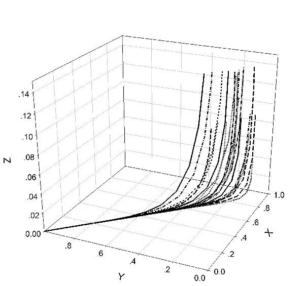
图1：θ=0.75，C=1，V=2的演化结果
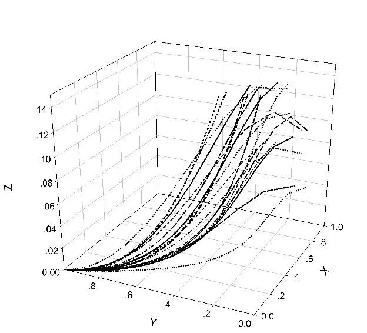
图2：θ=0.75，C=1，V=1的演化结果
上述演化模型显示，大国战略竞争存在内生性的自我“刹车”机制，当争夺目标的成本与价值比足够高时，这种“刹车”机制就会发挥作用，降低大国间的军事对抗程度，并驱使竞争双方尊重彼此已有的权力范围。[98]对于正处于战略竞争情境中的大国决策者来说，双方发生军事冲突的成本与所争夺目标的价值的比值很难预先精确判断，这使得真实情况下大国的战略竞争过程有时会偏离理论模型的预测，但是在反复多轮博弈过程中，战争的相对成本这个约束条件会持久地发挥作用，塑造最终的博弈结果。
上述模型印证了一个基本观点：竞争涉及的利益越重大，越容易陷入冲突。[99]对于两极体系下的两个超级大国而言，影响其所争夺土地价值的除了附着于该土地的物质资源外，还包括了土地归属所反映的权力地位。显然，拥有更多土地（国家）归属的大国享有更高的权力地位。而要获得更高的权力地位，大国有时需要与小国建立同盟为其提供安全保障，以这种“利益交换”方式换取小国的依附和追随。[100]出于维护自身声誉和战略信誉的考虑，大国有可能会受小国盟国牵连而与另一个大国开战。[101]孤立来看，某个小国的阵营归属（乃至该国所拥有的物质资源）本身的价值可能有限，但如果对该国的争夺会影响到此后对其他国家的争夺，那么该国的争夺价值会显著增高。[102]从这个角度看，联盟牵连问题是导致某单个土地争端对大国的价值增高从而使大国竞争向冲突对抗方向偏移的重要原因。[103]
战略竞争的成本包括了诸多方面。其中最为直观的影响因素是地理距离的远近。[104]所争夺目标距离自己越远，争夺需要耗费的资源就越多，为争夺该目标而发动战争的概率就更低，冲突持续时间就更短，反之概率更高，持续时间更长。[105]当然，对抗持续时间长短本身也会影响竞争成本。冲突持续时间越长，竞争对双方物质资源的消耗就越多，双方物质资源总量对各自战略决策的刚性约束效果就越有可能显现，同时国内观众对竞争的负面情绪也会向决策者施加压力，迫使决策者放弃或缓和对抗。此外，竞争对手对所争夺土地的控制程度也对争夺成本有直接影响。所争夺土地是对手自身领土，还是对手的政治附属国，还是仅仅存在军事援助义务的同盟国，还是只是一般的友好伙伴，显然对手为捍卫该土地而愿投入的资源是不一样的，因此为该土地展开争夺所需支付的成本也会存在差异。
上述多种因素共同作用，导致了真实的两极世界中大国战略竞争过程的多样性。但正如本节模型所揭示的，这些看似迥异的竞争过程存在着内在的规律，下一部分将对其做出实证检验。
四、两极体系的案例研究
本部分将采用序贯访谈法，对若干两极体系案例进行考察，以检验真实世界中两极战略竞争过程是否遵循本文理论部分所揭示的演化规律。
（一）晋与楚
晋楚两国竞争是春秋时期大国争霸的核心和焦点，晋楚两国的历史构成了春秋史的中坚。[106]在公元前632年城濮之战至公元前546年第二次弭兵之会之间的80多年时间里，国际体系基本处于晋楚两极结构之下。[107]春秋时期大国竞争的主要目标是争夺体系霸权。[108]为此，晋楚两国都想将尽可能多的小国纳入自己的领导范围，两国也因此而频繁陷入冲突和战争。
公元前634年，宋国叛楚投晋，引起楚国的不满。公元前633年冬，楚王亲征，率领郑、陈、蔡、许等国军队围攻宋国，宋国遂向晋国求救。晋大夫先轸对晋文公说：“报施救患，取威定霸，于是乎在矣！”[109]另一位大夫狐偃又向晋文公提供了具体的救宋策略：“楚始得曹而新昏于卫，若伐曹、卫，楚必救之，则齐、宋免矣。”[110]即并不直接与楚国交战，而是进攻楚国的属国，迫使楚国自救。面对晋国的举动，楚国提出：“请复卫侯而封曹伯，则楚亦释宋之围。”[111]晋国为了将曹卫两国也争取到自己一方，决定暗中许诺曹、卫复国，争取这两国的归附。[112]晋国这个策略虽然能够既保持对宋国的保护，又笼络了曹卫两国，但同时也存在一个显而易见的风险，即晋楚两国很有可能因此而直接开战。最终在狐偃等人的劝说下，晋文公接受了这种风险，决心与楚一战。[113]
公元前632年，晋楚两国在城濮开战，史称“城濮之战”。结果楚军大败，随后晋文公在践土召开会议，晋文公由此成为诸侯盟主。[114]城濮之战的起因是晋楚两国对小国归属的争夺，晋国在决策过程中对战争的收益和成本做过权衡，最终对预期收益的追求超过了对成本的考量。晋文公成功因这场战争而成为诸侯霸主，这又反过来激励晋国及其对手楚国在未来的战略竞争中更频繁地使用强硬扩张（HH）策略。一个值得注意的细节是，在城濮之战中，晋国保护宋国的方式是“围魏救赵”，即通过主动进攻楚国的属国曹、卫，以实现保护宋国的目的。晋国之所以采取这种方式，而不是单纯而直接地保护宋国，固然因为曹、卫两国距晋国更近，[115]同时也更深层次地反映出，春秋时期实施进攻的难度相对较低，单纯的防御或威慑难以有效保护小国不受侵犯，这也构成了当时国家间征战频发的重要原因。
除了宋国之外，位于晋楚两国之间的郑国是晋楚两国竞争的另一个焦点，郑国也经常在晋楚两国之间来回倒戈。公元前597年，楚庄王为迫使郑国彻底臣服于楚国，起兵围困郑国。晋国闻讯起兵救郑。但晋军刚到达黄河北岸就得到消息，郑国已经与楚媾和，楚军在郔地驻军封锁黄河渡口。这时晋军内部对于是否还要继续发兵救郑而与楚国开战出现了分歧。中军佐将先縠力主进兵，他说：“由我失霸，不如死。且成师以出，闻敌强而退，非夫也。”[116]在其带动下，晋军决意与楚一战，最终两国在邲地开战，史称“邲之战”。结果楚军大胜，郑、许等国都归附于楚。[117]
接连的战争并未给晋楚双方造成实质性的打击，双方都难以获得对对方的压倒性优势，[118]但同时自身的资源又出现了极大的消耗。在这种情况下，晋国主动提出与楚国讲和。[119]公元前579年，在宋国大夫华元的外交斡旋下，晋楚两国在宋国西门外举行第一次“弭兵之会”，双方签订了一个正式的同盟条约，盟约明确规定：“凡晋、楚无相加戎，好恶同之，同恤菑危，备救凶患。若有害楚，则晋伐之；在晋，楚亦如之……有渝此盟，明神殛之。”[120]
晋楚两国能够就“弭兵”问题达成共识并愿意签订盟约，这一现象本身就说明，长年战争带来的巨大成本已经开始促使两国考虑转变互动方式，由代价高昂的相互征伐（HH）转为停止战争、维持现状（HD）。不过，此时HD战略还没有真正成为ESS，双方互动模式又出现了一次反复。公元前575年，郑国再次叛晋投楚，进而发兵入侵晋国的属国宋国。晋厉公于是发兵讨郑，郑国随即向楚国求助。楚国一度犹豫是否要违背第一次弭兵之会的盟誓去救郑国。司马子反力主救郑：“郑急而告我，若不之救，则无以诏来者”。[121]出于战略信誉以及未来楚国在国际社会号召力的考虑，楚共王决定背叛弭兵之盟，亲征救郑。当年夏天，晋楚双方军队在鄢陵开战，结果楚军大败。[122]
尽管征伐的利益始终在诱使晋楚选择HH战略，但战争成本的不断累积却客观上使得这种战略逐渐难以为继。有统计显示，晋楚两国在城濮之战至第二次弭兵之会间大小战争和军事冲突有20余次。[123]长期而频繁的战争令各国都承受着巨大的压力，郑、宋等作为晋楚两国争夺焦点的小国饱受战争的荼毒。“民人不获享其土利，夫妇辛苦垫隘，无所底告”，[124]“民死亡者，非其父兄，即其子弟，夫人愁痛，不知所庇”。[125]在这种情况下，停止战争就成为当时的主流社会思潮。晋国大夫韩宣子就认为：“兵，民之残也，财用之蠹，小国之大菑也。将或弭之，虽曰不可，必将许之。弗许，楚将许之，以召诸侯，则我失为盟主矣。”[126]可见当时是否“弭兵”已经关系到民心向背和霸权的得失。
与此同时，晋国国内公室权力日益衰微，卿大夫势力日益膨胀，国内权力争夺日趋尖锐，没有足够的精力和资源用于对外争霸，所谓晋“实不能御楚，又不能庇郑”。[127]楚国则面临侧后方日益崛起的吴国的巨大威胁。[128]在内外部环境的共同作用下，两国都意识到继续与对方对抗的成本超过了对自己的收益，最终两国都接受了宋国执政向戌的建议，再次就弭兵达成协议。公元前546年夏，晋、楚、齐、秦、鲁、宋、郑等14个大小诸侯国在宋国召开规模空前的诸侯国间会议，商定晋楚弭兵，史称第二次“弭兵之会”。
在此次会议中，楚国在两国弭兵和结盟的基础上提出了一个更激进的建议：“请晋、楚之从交相见也”，即让晋国的属国今后也要到楚国去朝觐，楚国的属国也须到晋国去朝觐。这一建议的实质是晋楚两国共同对全体小国享有领导权，而不再区分哪些小国是晋国的属国，哪些小国是楚国的属国。最终两国达成协议，除齐、秦两国外，其他国家须两面朝觐。[129]两面朝觐增加了晋楚两个大国合作的收益，亦即增加了彼此背叛、重新开启征伐的成本。在战争成本不断增加的根本约束下，晋楚两国最终放弃了相互武力扩张的互动模式，从此直到春秋末年，晋楚两国在中原再未发生过大的战争。[130]
（二）罗马与迦太基
晋楚案例显示，当成本足够高时，两极战略竞争会从激烈武力争夺（HH）转向彼此尊重对方势力范围（HD）。随即引发的问题是，如果成本没有高到足以对大国决策构成约束的程度时，初始状态下HH战略盛行的战略竞争又会如何演化？带着这个问题，我们考察第二个案例：罗马与迦太基的战略竞争。
在公元前3世纪中叶之前的很长时期里，迦太基都是西地中海地区最强大的国家。公元前272年，罗马共和国完成了对意大利中部和南部的征服，但它并未就此停止扩张的步伐。罗马的崛起和扩张使得它与迦太基的战略竞争变得不可避免。[131]公元前264年，双方因争夺西西里岛北端的墨西拿（Messina）的控制权而发生冲突。尽管当时罗马的战略重心仍只是在意大利，但它认识到，如果放弃对墨西拿的争夺，这个意大利与西西里之间的桥头堡就将属于迦太基。与此同时，对于此举将引发与迦太基的战争，罗马人并不特别感到畏惧。[132]事实上，在两国发生正面交锋时，两国均处于鼎盛时期且实力大体相当，均未因扩张而面临过物质资源方面的压力。[133]在这种情况下，第一次布匿战争爆发了。
战争令两国都付出了高昂的代价，但相比之下，迦太基的战争成本更大。在罗马海军夺得制海权后，迦太基难以继续对西西里的迦太基城市进行征税，其在西西里的雇佣军还因不能及时得到军饷而发生哗变。与之相比，罗马的大部分军事开销都由位于西西里东部的盟国叙拉古（Syracuse）负担，而绝大多数战事都发生在西西里西部，因此其经济来源未受较大破坏。[134]公元前241年，罗马在埃加迪群岛海战中获胜，迦太基被迫同意从西西里、撒丁及其与意大利之间所有岛屿撤出，交出所有战俘并向罗马偿付巨额赔款，第一次布匿战争结束。[135]迦太基由此在与罗马的战略竞争中从均势走向劣势。
第一次布匿战争中，尽管罗马在战场上人员伤亡很大，但国力并未受到根本性冲击。在整个战争过程中，除与迦太基作战外，没有其他威胁分散罗马的精力：没有意大利北部高卢人的入侵，没有意大利盟友的反叛，也没有出现与亚得里亚海各国的争端。这一时期罗马国内的社会压力（民众对债务水平及能否获得法律和政治权利的普遍焦虑）也处于低位。[136]这些情况构成了罗马最终赢得战争的基础。战争结束后，罗马先后在西西里和撒丁建立行省，消除高卢等意大利北部威胁，将边境线北推至阿尔卑斯山，势力范围得到进一步扩展。[137]
与此同时，迦太基也同样利用双方休战的时机，在一定程度上恢复了自身实力。事实证明，只要不遭到罗马的永久性摧毁，迦太基就有能力变得重新强大。[138]迦太基先是平息了西西里和北非的反叛，[139]继而在西班牙开辟殖民地，由此获得了广阔的商贸和制成品市场，不仅能够在此供养军队，而且还有盈余可以汇到迦太基作为未来战争的储备金。[140]迦太基在西班牙的成功开发以及由此带来的实力恢复，使其有信心向罗马发动新的战争。[141]到公元前220年汉尼拔决定远征罗马时，其已经控制了伊比利亚半岛几乎一半的土地，拥有一支6万名步兵、8000名骑兵和200头大象的大军，规模巨大的矿业生产则为其提供了充足的经济保障。[142]
如果说第一次布匿战争还是一场由土地归属引发的计划外战争，[143]那么第二次布匿战争（公元前219年—公元前201年）在很大程度上则是一场由衰落的主导国向崛起国发起的有预谋的预防性战争，[144]迦太基发动这场战争的主要目的是为了确保自己的生存。[145]战争初期，罗马军队节节败退。公元前216年，汉尼拔军队在坎尼战役中大胜，至少5万罗马及其盟友士兵阵亡，数千名士兵被俘，意大利南部许多原本效忠罗马的城市纷纷倒戈。但即使在这种情况下，罗马也并未选择投降，而是断然拒绝了汉尼拔派去和谈的使者进入罗马城的请求。[146]
坎尼战役后，罗马迅速调整战略，避免与汉尼拔正面作战，将战争拖入消耗战。孤军深入的汉尼拔获得军事资源的主要渠道是当地临时归降者提供的接济。但随着战争的继续，汉尼拔难以争取到更多意大利城邦的支持，而一部分原本归降的城邦又重新加入罗马阵营。在这种形势下，汉尼拔自己也清晰地认识到，己方此前在战场上所取得的胜利并不能够对罗马的实力基础构成真正的打击，仅凭自己和在意大利的友军根本无法彻底征服罗马。但当他向国内求援时，国内的求和派断然拒绝了其请求。[147]在消耗战背景下，胜利天平很自然地向更具资源可持续性的罗马一方倾斜。
第二次布匿战争同样给罗马带来了巨大的物质消耗，政府甚至一度无力开支军饷。对此罗马不断进行经济和军事改革，包括重组货币体系、建立国家储蓄机构、提高税率、针对富人强制性征收累进税、扩大军队招募对象范围等。[148]这些改革帮助罗马人克服了经济困难，并于公元前204年成功组织了由执政官普布利乌斯·西庇阿率领的3万大军、40艘战舰和400艘运输船远征迦太基本土。[149]不仅如此，在第二次布匿战争间隙，罗马还于公元前211至205年与马其顿交战（第一次马其顿战争），并成功阻止了马其顿的扩张，迫使迦太基舰队无法利用伊利里安和希腊港口进攻意大利。[150]这些都说明，尽管战争消耗巨大，但并没有到罗马可使用资源的极限。最终，第二次布匿战争再次以罗马胜利而告终，迦太基放弃阿非利加以外全部领土，只保留10艘舰船，[151]在事实上已经失去了继续参与大国战略竞争的资格，而罗马则正式确立其在中西部地中海地区的霸主地位。
与迦太基的两次战争均获胜且自身消耗在可承受范围之内，这促使罗马对外政策日益富于进攻性。第二次布匿战争后，罗马又接连发动第二次马其顿战争（公元前200年—前197年）、叙利亚战争（公元前192—前188年）、第三次马其顿战争（公元前171年—前168年）和第三次布匿战争（公元前149年—前146年），侵略和扩张成为罗马的主导战略。[152]罗马之所以能够持续采取扩张战略并不断取得胜利，一个关键性原因是罗马能够将新征服的土地迅速融合为一个整体并从新征服土地中有效汲取人力和物质资源。[153]这种能力使其在很大程度上得以克服战争成本的约束，从而能够在与对手的军事对抗中笑到最后。这种正向反馈反过来又塑造和强化了罗马崇尚进攻、尚武好战的民族文化。[154]
（三）雅典与斯巴达
在晋与楚、罗马与迦太基两个案例中，战略分布的初始状态都是HH战略为主导，只不过由于战争成本的约束情况不同而导致了两者演化过程和结果的不同。我们随即需要考察另一类情形：在初始状态是HD战略为主导的情况下两极战略竞争的演化过程。为此我们将在本小节和下一小节分别考察雅典与斯巴达和美国与苏联的战略竞争过程。
公元前479年波斯入侵希腊失败后，雅典迅速崛起。[155]公元前457年，雅典在奥诺斐塔（Oenophyta）战役中击败玻俄提亚（Boeotia），随后埃伊纳岛（Aegina）投降成为雅典附属国，[156]雅典的扩张由此达到顶点。但随后，雅典的埃及远征军被歼灭，这促使雅典放弃了在希腊本土的进一步扩张。[157]公元前446年，雅典和斯巴达签订《三十年和约》。和约规定，雅典放弃在伯罗奔尼撒所取得的据点；如果出现争端，只要双方中任何一方愿意将其提交仲裁，则另一方不得对其发动武力攻击；双方须保持本和约缔结时各自的同盟状态，任何一方的盟国发生背叛并转投另一方，即视接受该国的一方违背本和约；中立国可根据自己意愿加入其中一方。[158]
《三十年和约》不仅正式确立了雅典和斯巴达海陆分治希腊世界的格局，[159]更为重要的是，它明确规定了两个大国防御性的行为规则。修昔底德将和约签署到公元前431年伯罗奔尼撒战争爆发这段时期描述为双方积蓄力量伺机向对方发动决定性打击的准备时期，这一看法与当时的史实不符。[160]真实情况是，这段时期雅典和斯巴达都恪守了和约，均表现出明显的保持现状倾向。
与人们通常的印象相反，从和约签署到公元前433年，雅典并没有四处扩张，而是表现出明显的维持现状偏好。[161]公元前446/445年，数度被毁的意大利南部城市锡巴里斯（Sybaris）的幸存者向雅典和斯巴达提出帮助其重建城池的请求，雅典积极回应并帮助其建立了名叫图里（Thurii）的新城，但这座新城并不隶属于雅典，而是一个泛希腊化的城市，在组成其人口的十个部落中，只有一个是雅典部落。[162]随后大约在公元前442/441年，图里卷入与斯巴达旧殖民地塔拉斯（Taras）的战争并且输了，但雅典对此没有做出任何反应。如果雅典建立图里是出于帝国的扩张，很难解释它为何会听任其输给斯巴达的殖民地。公元前434/433年，图里爆发内部冲突，雅典和斯巴达都声称图里是自己的殖民地，当时科林斯与科基拉（Corcyra）已经因埃比达姆诺斯（Epidamnus）内战而处于敌对状态，雅典和斯巴达两大阵营发生冲突的可能性已经非常大，就在这种情况下，雅典仍然同意图里诉诸德尔菲神谕的仲裁而没有采取任何行动。[163]
与雅典相似，斯巴达在公元前446—433年这段时期没有增加新的盟国，也没有进行针对雅典的战争准备。[164]公元前440年，雅典同盟的两个成员国萨摩斯（Samos）和米利都（Miletus）爆发战争，米利都惨败遂向雅典求援。雅典因此派舰队前往萨摩斯，推翻了原有的寡头政权，建立民主政权。但在雅典军队撤离萨摩斯后，一些萨摩斯人与波斯总督皮苏特涅斯密谋，重新夺回萨摩斯政权，并将俘获的雅典在萨摩斯的驻军交于皮苏特涅斯。受其影响，拜占庭人也宣布反叛雅典。[165]这一事件对雅典构成了极大威胁：萨摩斯本身就拥有强大的海军，拜占庭的反叛更有可能在雅典帝国内部引发连锁反应，最重要的是，萨摩斯人同时还在寻求伯罗奔尼撒的支持。这一切的关键都取决于斯巴达的态度，如果没有斯巴达的支持，雅典的大多数臣邦不会冒险与雅典开战。[166]可以说，雅典从来没有像这时那样濒临被反叛的盟国打败的危险。[167]然而，从公元前433年科林斯人在雅典公民大会上的发言可以看出，当时伯罗奔尼撒同盟内部对于是否援助萨摩斯人意见不一，而斯巴达则至少默许了反对派的意见，并没有趁此机会对雅典采取任何行动。[168]
直到伯罗奔尼撒战争爆发前两年，雅典和斯巴达对战争依然非常犹豫和谨慎。公元前433年，科基拉殖民地埃比达姆诺斯发生内战，埃比达姆诺斯民主派求助科基拉未果，转而求助科基拉的母国科林斯，由此引发科基拉和科林斯的冲突。科基拉代表出席雅典公民大会请求雅典提供援助，雅典人的第一反应是拒绝。[169]即使最终雅典决定与科基拉结盟，也明确将同盟的性质限定为“防御性同盟”（epimachia），以避免违反《三十年和约》，[170]并且只派出一只10艘战船组成的小型舰队。[171]所有这些都向斯巴达释放出雅典无意于战争的信号。[172]
与雅典一样，从科基拉危机开始，斯巴达一直非常谨慎，努力避免卷入与雅典的直接军事冲突。在科基拉寻求雅典援助的同时，科林斯也希望斯巴达提供哪怕少量象征性的兵力，但出于对战争的谨慎，斯巴达在这次事件中没有为科林斯提供任何援助。[173]在琉基姆尼（Leucimme）战役之后，斯巴达要求科林斯通过谈判或仲裁解决纷争。[174]公元前432年，在科林斯的游说下斯巴达终于决定向雅典开战，但即使到这时，斯巴达对战争依然是谨慎和犹豫的。它首先去德尔菲问卜，在得到肯定的答复后，又向雅典派出3个外交使团，其中有两个都可视为斯巴达为达成和平解决方案、避免战争所做的努力。[175]
尽管雅典和斯巴达主观上都不愿与对方开战因而尽力保持克制，但在盟国的唆使和权力动机的驱使下，斯巴达人最终还是选择了向雅典开战。与古希腊世界大多数战争一样，这场战争所要争夺的主要目标并不是对方的领土，而是对方乃至整个体系对自己领导地位的承认。[176]斯巴达清楚地意识到，如果不听从科林斯等盟友的请求而拒绝向雅典宣战，自己所领导的伯罗奔尼撒同盟就有可能分崩离析，这是其无法承受的。
公元前432年，在斯巴达公民大会上，科林斯代表明确警告说，如果斯巴达听任雅典在墨伽拉（Megara）和波提狄亚（Potidaea）的挑衅而无视盟友的援助诉求，那么这将意味着“将你的朋友和族人出卖给他们最大的敌人，并迫使我们其他盟邦在绝望中寻求加入其他的同盟”。[177]科林斯作为伯罗奔尼撒同盟的重要成员，一旦真的背叛斯巴达甚至倒向雅典一方，将会引发连锁反应，使得墨伽拉等其他伯罗奔尼撒同盟成员背叛同盟，这将对斯巴达的实力和影响力造成重大打击。[178]更重要的是，如果斯巴达拒绝科林斯的援助请求，将向外界释放一种负面信号，使伯罗奔尼撒同盟成员和雅典人都认为斯巴达是软弱的，从而使雅典人更加大胆，并使伯罗奔尼撒联盟更加涣散，[179]斯巴达人从其先辈那里继承下来的在希腊的领导地位也将因此而被削弱。[180]
此时的斯巴达面临一个两难的选择：如果同意科林斯的诉求，自己将卷入与雅典的直接战争；而如果拒绝，则将面临同盟解体的巨大风险。[181]然而，对自身声誉和同盟信誉的考量以及失去盟国支持可能引发的连锁反应，放大了斯巴达实施武力竞争的利益，使其最终突破了遵守15年的防御性战略，于公元前431年向雅典开战战争，该两极体系最终以体系战争方式而告结束。
（四）美国与苏联
在雅典和斯巴达的案例中，尽管两国一开始的互动处于（HD，HD）这种相对和平的状态，但当竞争所涉利益增大时，HD战略未能抵御HH战略的入侵，两国最终陷入了旷日持久的大战。那么，如果对抗的成本足够高，大国是否能够抵御利益的诱惑而保持原有的稳定状态呢？本节将考察另一个初始状态同样是HD战略为主导但竞争成本极其高昂的案例：美苏竞争。
美苏两国真正意义上的战略竞争始于第二次世界大战结束。两次世界大战对人类造成的巨大灾难在很大程度上已经改变了人们对战争曾经有过的正面评价。这使得包括美苏两个超级大国在内的主要国家从二战结束开始就对战争这个策略选项极为审慎。[182]而真正使得美苏两国不仅在主观意图上从未考虑过主动向对方发动战争，而且发自内心地惧怕两国发生直接战争的根本原因，是核武器的出现。随着1945年的“原子革命”和20世纪50年代中期的“热核革命”的完成以及洲际弹道导弹的出现，所有的领导人都不得不承认这样一个事实，那就是他们所处的世界已经彻底发生了变革，相互摧毁使得没有任何一个战争参与者能够在战争结束后幸存。[183]核战争所导致的这种极为确定的巨大成本使得战略防御在二战后的大国安全互动中占据了主导地位。[184]
在核威慑所建立的相互确保摧毁态势下，美国和苏联尽管在很多问题上存在巨大分歧和利益冲突，但在一个问题上两国的目标始终高度一致，那就是避免第三次世界大战以及美苏之间的一般性战争和核战争。为此，美苏双方都努力将彼此的冲突控制在一定范围之内。[185]事实上，冷战体系与1945年以前国际体系的一个最显著的区别就是冷战时期大国对战争的极端谨慎。从冷战一开始，美苏两国都将避免与对方发生直接战争作为对外战略的首要前提。例如，有证据表明，1950年斯大林之所以支持朝鲜发动战争，是因为他相信此举不会招致美国的反对和介入。[186]与此相一致地，美苏尽管在全球持续开展激烈的地缘竞争，但都很有“默契”地尊重对方的“后院”地区。根据国际军事争端数据库（MID Data）的统计数据，1946至1991年，美国军事挑战苏联东欧盟国和苏联军事挑战美国拉美盟国的次数均为0。[187]
在发动战争有可能导致两国直接军事冲突的情况下，出于对核战争的恐惧，美苏两国宁可选择放弃战争，哪怕这么做会使大国间权力对比向着对自己不利的方向改变，[188]这是此前的国际体系所不曾有过的。[189]这一点在1962年的古巴导弹危机中得到了充分体现。美国对古巴革命的一系列镇压和破坏行动，是导致1962年古巴导弹危机的重要推动因素。[190]苏联意识到，如果不能很好地满足古巴寻求安全保障的需要，苏联将很有可能失去在古巴的影响力。出于保护古巴的目的，赫鲁晓夫于1962年5月做出决定，在古巴秘密部署核导弹。[191]10月美国得知苏联在古巴的举动并做出封锁古巴的决定后，两国冲突迅速升级为随时可能引发核大战的危机。肯尼迪要求苏联立即撤出在古巴部署的导弹，而赫鲁晓夫则表示这样做必须以北约从土耳其和意大利的基地撤出木星导弹作为交换。[192]
在这场危机中，美苏双方的决策都承受着失去同盟战略信誉的风险。在危机过程中，卡斯特罗给赫鲁晓夫施加了极大的压力。[193]很显然，苏联如果在与美国的这次对抗中退缩，将很可能失去卡斯特罗的信任。而美国如果同意苏联用其在古巴的导弹与美国在欧洲的导弹做交易，同样等于向全世界宣告美国在苏联压力下退缩了，同时也就意味着美国接受了苏联将古巴导弹与美国在土耳其的导弹相提并论的提法。[194]然而，尽管两国在这次危机中所牵涉的利益都极其重大，但在核战争的可怕后果面前，两国领导人仍然都选择了妥协。最终苏联撤出了在古巴的导弹，而美国则承诺不对古巴实施军事入侵并默许撤出在欧洲的导弹。
古巴导弹危机的和平解决表明，当美苏两个大国有可能因争夺某个小国而发生直接战争时，避免战争是两国的首要利益。导致这种局面产生的根本原因是核武器“相互确保摧毁”的巨大成本。[195]古巴导弹危机使美苏两国都深刻认识到避免冲突升级对确保两国乃至全世界安全的重大意义。一位前苏联大使在回顾这场危机的影响时指出：“对于美苏双方以及各自的领导者们来说，1962年10月所发生的事情具有极其重大的教育意义。它使得人们第一次意识到，核毁灭是有可能的，因此外交冒险政策应当被排除在大国决策选项的范围之外，与此同时，超级大国间应当建立和追求更安全、更具建设性的关系。”[196]
事实上，古巴导弹危机的确成为了美苏冷战的一个分水岭和转折点。在此之前，美苏之间动辄以“动用核武器”威胁对方，而在此以后，两国再也没有为获取政治、外交利益而对对方发出过核威胁，[197]冷战也由此进入了长期停“战”阶段，在这一阶段两个超级大国的竞争被它们对核力量的相互恐惧所抑制，[198]两国之间的直接危机变得罕见和短暂。即使是坚持进攻性战略的勃列日涅夫时代的苏联，其进攻性战略在政治领域的核心手段反而是缓和（detente），即“国与国之间的争端和冲突不应通过战争、不应通过使用武力或以武力威胁来解决”。[199]
美苏冷战缓和最突出地体现在核军控领域。[200]古巴导弹危机一年之后的1963年，美苏两国签署《禁止核试验条约》，停止水下、太空和大气核试验。1969年，美苏启动战略武器限制谈判（Strategic Arms Limitations Talks，SALT)，并于1972年达成《美苏第一阶段限制战略武器条约》，将双方进攻性洲际导弹冻结在现有水平，并对反弹道导弹部署数量做出限制。1974年，双方又签署《美苏限制地下核武器试验条约》。1979年，双方签署《美苏第一阶段限制战略武器条约》，强调将双方拥有的核弹头数量减少到2250枚，并禁止新的武器计划产生。[201]此外，美苏还于1975年达成《赫尔辛基协定》，就战后欧洲国家边界问题达成共识。[202]
里根上台后，美国一度重新采取对抗性的对苏政策并重启军备竞赛，这段时期被称为第二次冷战。[203]尽管如此，1982年两国仍然参与了“削减战略武器条约”（Strategic Arms Reduction Treaty，START）的谈判。1987年，美苏两国签署《中导条约》，标志着美苏第二次缓和走向高峰。随着戈尔巴乔夫对内改革和一系列裁军撤军政策的实施，美苏对抗逐渐被一种更加合作的关系所取代。[204]
（五）宋与辽
宋辽对峙是研究两极体系的一个理想案例。[205]两国的战略互动经历了相对和平—相互征战—相对和平—相互征战—持续和平的全部过程，剖析该案例可以帮助我们更完整地观察两极体系下两极战略竞争从冲突到缓和的作用机制。根据序贯访谈法，如果该案例仍未发现超出本文理论研究所得出的认识，即意味着案例考察已经饱和，可以就此做出结论。
北宋建立之初，试图缓和与辽的对抗，瓦解辽与北汉的联盟，进而争取以赎买方式和平收复燕云失地。[206]961年，宋太祖敕令边境各州禁止人民越辽境盗马，以免滋生事端。[207]但平定北汉是宋统一中原的必要环节，因此宋辽还是因北汉问题而不可避免地发生了冲突。968年，宋军趁北汉发生内乱之机进攻北汉，北汉遂向辽求援，辽援军与宋军交战并击退宋军。宋辽两国互动就此由最初的彼此和平滑向了相互交战。第二年，宋太祖亲征北汉，契丹分两路援汉，两军在阳曲县北和定州以西交战。宋军久攻太原不下后撤军。[208]
与此同时，自五代起辽国在与中原王朝持续不断的战争中也承受了巨大的压力。在民间，频繁的战争致使幽燕地区民不聊生、哀鸿遍野，“边人畏惧，斥候日警，夫妇男女，不遑启处”。[209]在军政阶层，同样存在明显的厌战情绪。951年辽世宗欲联合北汉进犯后周，召集各部酋长集议，“诸部皆不欲南寇”。[210]与此同时，在多次军事交手中，契丹也充分认识到宋朝的军事实力。970年，契丹六万骑兵袭击定州，宋派将领田钦祚领兵三千御敌且互有胜负。[211]宋对辽实力也颇为忌惮，且分化辽与北汉关系对宋平定北汉至关重要。[212]在双方实力相当且均不愿为战争支付过多成本的情况下，974年辽向宋致书表达了讲和愿望：“今兹两朝，本无纤隙，若或交驰一介之使，显布二君之心，用息疲民，重修旧好，长为与国，不亦休哉？”[213]宋对此积极响应，最终达成“雄州和议”并建立平等外交关系。[214]这是宋辽两国战略互动中第一次由冲突走向缓和。
尽管如此，宋辽的核心矛盾——幽燕地区的领土归属——并未解决。更重要的是，此时的战争成本尚未对两国特别是宋构成约束。宋太祖计算了与辽作战的经济成本：“我以二十匹绢购一契丹首，其精兵不过十万，止不过费我二百万匹绢，则契丹尽矣”。[215]宋太宗在了解国库已积累的财富后感慨：“此金帛如山，用何能尽，先帝每焦心劳虑，以经费为念，何其过也！”[216]在宋认为本国在物质资源方面占据明显优势的情况下，其对辽战略很自然地逐渐转向强硬。979年，宋太宗在亲率大军征伐北汉前给辽国的答复中明确表示：“河东逆命，所当问罪。若北朝不援，和约如旧，不然则战。”[217]
979年宋太宗征伐北汉胜利后，突然决定向辽开战，企图一举收复幽燕，两国关系再度由缓和转向冲突。最终宋军在高粱河战役中惨败。契丹则受此役获胜的激励，于979年和980年先后发动三次报复性进攻，结果双方互有胜负，继续保持原有疆界。[218]986年，宋太宗趁辽圣宗年幼，发动二十万大军第二次征伐契丹，史称“雍熙北伐”，结果宋军再次失败。[219]此役过后，宋被迫由战略进攻转向战略防御。[220]宋高层形成了“来则御之，去则勿逐”的战略共识，对辽战略目标变成了“议定华戎之疆”，“结好欢和”。[221]
雍熙北伐后，从988年至1002年，辽多次侵宋，双方始终互有胜负，宋军无力深入追击和围歼来犯的辽军，而辽军也无法成功攻占入侵地区。[222]屡次伐宋均徒劳无功，使辽高级将领普遍产生厌战思想，[223]萧太后也“有厌兵意”。[224]在此情况下，辽制定了以战促和的对宋方略。[225]宋真宗继位后，也希望与辽结束战争，但宋并没有因此在领土问题上对辽妥协退让，而是选择在强硬回击辽军事入侵的基础上对等求和。[226]1004年秋，辽再次大举攻宋，双方仍是互有胜负。两国边打边谈，最终于1005年1月在澶州达成和议，两国各以战前疆土为界，宋每年为辽提供二十万匹绢和十万两银，史称澶渊之盟。[227]两国关系再次由冲突走向缓和。
澶渊之盟得以达成的一个关键原因是宋辽势均力敌。[228]双方均无法在军事上完全压制对手，而双方又都不愿继续承担战争的成本，这种状态在澶渊之盟之后一直得以维持，从而造就了宋辽两极长达一百二十年左右的和平。
当然，任何双边关系在两国长期共存和互动中都会不可避免地出现起伏波动，宋辽也不例外。1041年，辽兴宗乘宋与西夏交战之机，遣使向宋提出索取关南地区的要求，被宋坚决拒绝。经过反复谈判，双方于1042年9月达成协议：宋增加二十万岁币，辽不再索要关南地区土地，且辽须责令西夏重新向宋纳款。随后辽履行了协议，命西夏与宋议和。[229]该协议的本质是宋以经济手段增加辽改变现状的机会成本，换取辽对两国领土现状的继续遵守并借助辽国制约西夏。1043年，西夏向辽提议联合侵宋，被辽拒绝。[230]
在辽有改变领土现状企图的情况下两国依然保持了和平，这除了宋为维护两国和平而以经济手段进行交换外，更关键的原因是两国实力的对比制约了辽对攻宋的收益预期，从而使军事扩张无法成为辽对宋的演化稳定战略。富弼入使辽国时曾问辽兴宗：“今中国提封万里，所在精兵以万计，法令修明，上下一心，北朝欲用兵，能保其必胜乎？”辽兴宗回答说：“不能。”[231]辽臣萧孝穆也提醒辽兴宗，与宋交战“胜败未可逆料”。[232]由此可见，一旦两极战略竞争稳定于（HD、HD）这种和平模式，那么只要成本价值比不发生性质改变，这种和平模式就能够抵御两国决策者主观意图的临时干扰而继续保持。
五、结论
**
**
根据定义，战略竞争不是单方面的，而是在互动中进行的。既然是互动，就必然会承受阻力。就像物理世界中摩擦阻力永远不会为零一样，只要开展战略竞争，就必须支付成本。假如两极战略竞争是“一场大战定胜负”的一锤子买卖，那么相对于竞争目标价值的竞争成本对竞争本身所具有的“刹车”作用就很难显现，因为单轮的讨价还价（ bargain）总是有可能因信息不对称和承诺问题而陷入缺乏效率的冲突或战争。[233]而如果两极战略竞争是两极长期共存下的多轮博弈，那么上述“刹车”机制就有机会发挥作用，逐渐划分出两极各自的利益边界并形成尊重彼此权力范围的规范。[234]现实情况是，两个超级大国长期共存从而形成两极结构理论上可能，历史上多次出现，当前正在发生。
在当今这个大国无战争时代，中美两国无疑将长期共存。从这个意义上讲，两极体系路径比权力转移路径更适合被用来作为分析当今及未来中美关系的理论框架。核武器、经济相互依赖及其他显而易见的因素，使得当今时代竞争成本与目标价值比的比值可能比历史上任何时候都要大，这意味着，如果中美竞争存在宿命，那也只会是“注定缓和”，而恰恰不会是“注定一战”。不过，与美苏及历史上其他两极竞争聚焦于地缘和安全领域不同，当前中美竞争的主战场是科技和经贸领域，这些低政治领域的竞争尽管也须支付显著的成本，但毕竟不会立即直接威胁两国的主权、政权和国土安全，因此中美竞争“刹车”效果的显现或许需要更长的时间。
当前我们对两极体系的认识与20世纪80年代相比没有明显进步，而那个时代以美苏冷战这一个案例为经验基础的两极理论甚至对这个案例本身的解释都很难令所有人信服。[235]面对正在形成的中美两极结构，如果继续以这样样本奇少、漏洞明显的陈旧理论为分析工具，很可能会对我们对中美战略互动的认识及政策制定产生误导。冷战时期的国际关系学者已经为加深人类对当时两极体系的理解贡献了他们的智慧和力量，对于21世纪的新一代学者特别是中国学者而言，面对当今相似而又不同的国际形势，努力扩充两极体系数据、锐意创新两极体系理论，既是责任，也是机遇。
参考文献：
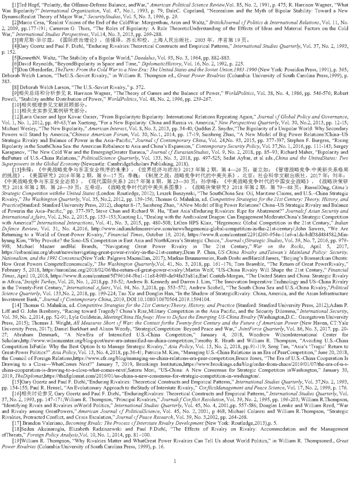
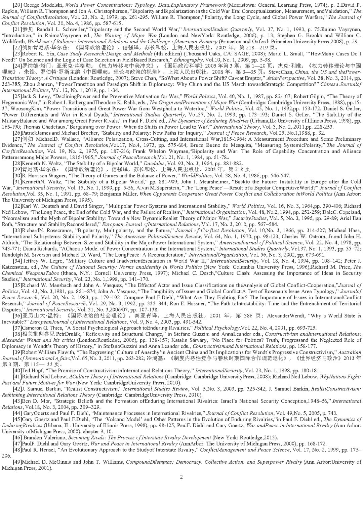
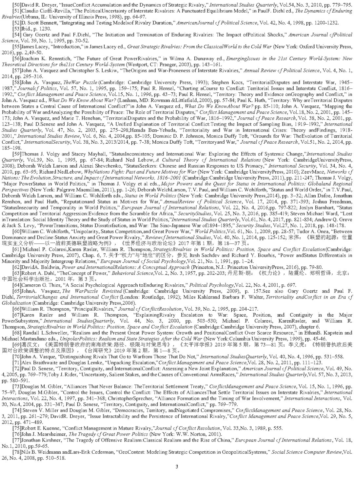
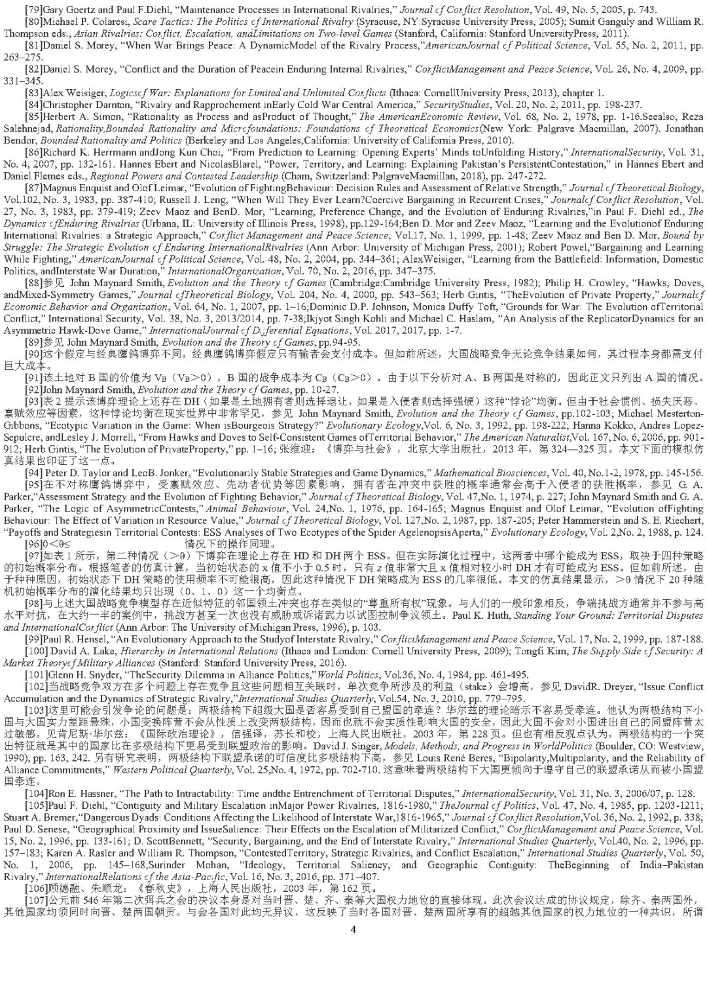
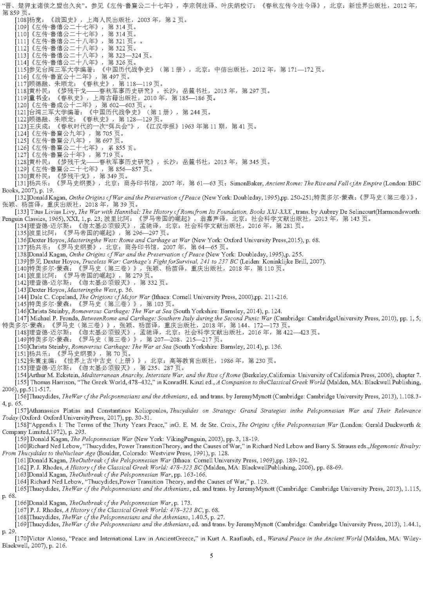
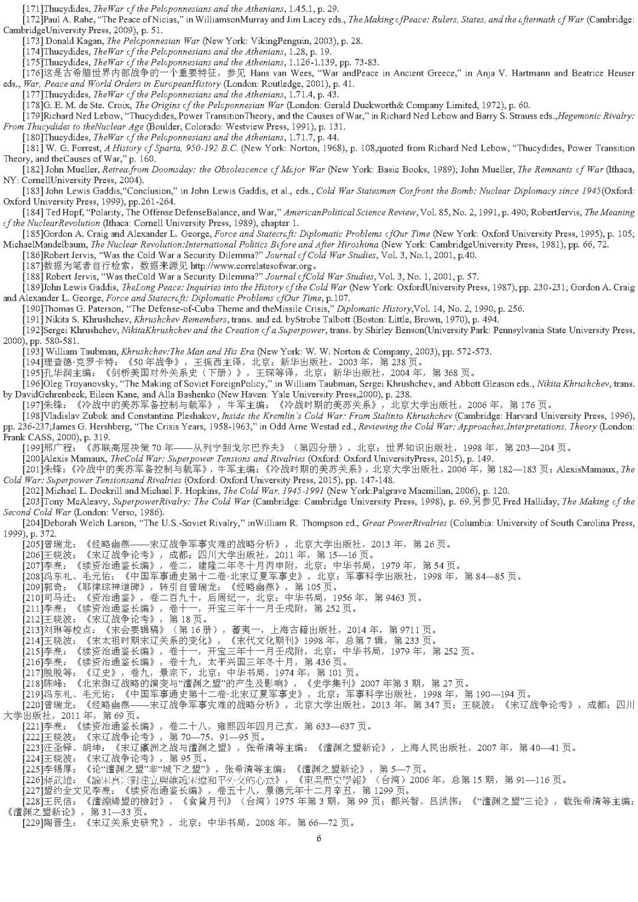
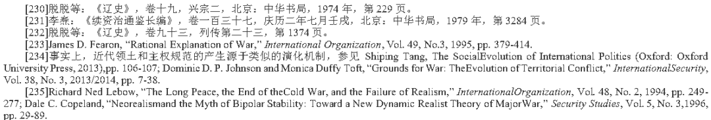
延伸阅读：【中美关系】“权力转移”叙事如何塑造大国间的战争与和平？丨国政学人
扫下方二维码查看往期精彩
【新刊速递】第01期 | Review of International Studies Vol.45, No.4, 2019
【新刊速递】第02期 | International Relations Vol.33, No.3, 2019
【新刊速递】第03期 | International Organization Vol.73, No.3, 2019
【新刊速递】第04期 | World Politics, Vol.71, No.4, 2019
【新刊速递】第05期 | European Journal of International Relations
【新刊速递】第06期 | Security Studies, Vol.28, No.4, 2019
【新刊速递】第07期|International Secur.ity, Vol 44, No. 2, 2019 | 国政学人
【新刊速递】第8期| Cambridge Review of International Affairs,Vol.32,No.4

点“在看”给我一朵小黄花